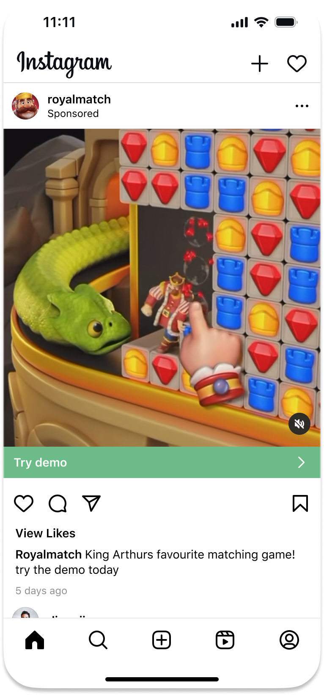
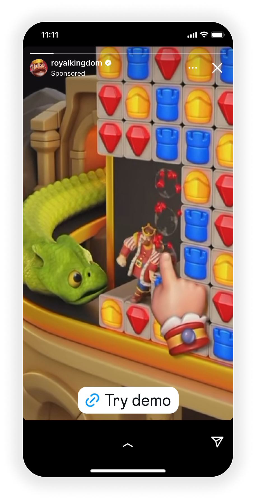
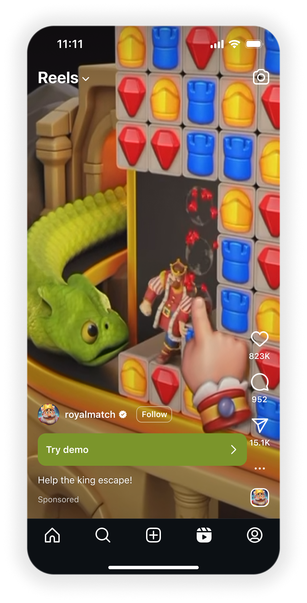
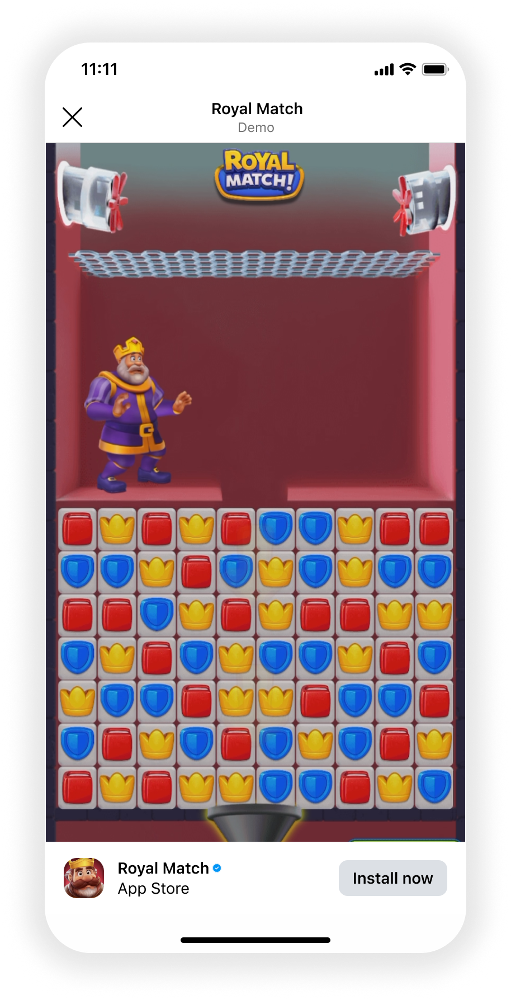

2014 – 2015

Repsol
IT Infrastructure Analyst
My first internshipDecommissioned 100+ servers from gas plants across northern Canada.




 Mobile Feature 0→1
AI Design Tools
VR Spatial Design
Mobile Feature 0→1
AI Design Tools
VR Spatial Design
My background is a bit of a mix. Born in Hong Kong, raised in Canada, and now living in London, I started out in business and tech, working across operations and consulting before I retrained as a designer in 2018. That way of thinking stuck with me. I still think in outcomes, growth, and the product behind the pixels.
At my core, I love building things. I'm happiest when I'm in the weeds, figuring out how a system works, prototyping a new idea, or exploring new tools. Lately I've been experimenting with AI to speed up my workflow and build more independently.
My first internshipDecommissioned 100+ servers from gas plants across northern Canada.
Designed management dashboards tracking backlog items for 30+ software teams.
Ran daily scrums with dev teams in India and Spain to resolve code defects and UX/UI issues.
Shipped UX improvements to the Cognos Analytics dashboard on IBM's Carbon design system.
Before AI went mainstream — prototyped an NLP text-to-speech audio-articles feature.

Ad formats shipping to Facebook & Instagram, B2B (Workplace), and product visions for VR.
Victor Ng Ceramics is my solo studio practice — wonky, one-of-a-kind wheel-thrown pieces, never matching sets. I've grown it to 50K+ followers, 50M+ views and a 500+ newsletter, sold 500+ works, and was cast on Season 8 of The Great Pottery Throwdown. I run the whole thing myself — making, sales, marketing, content and the website.